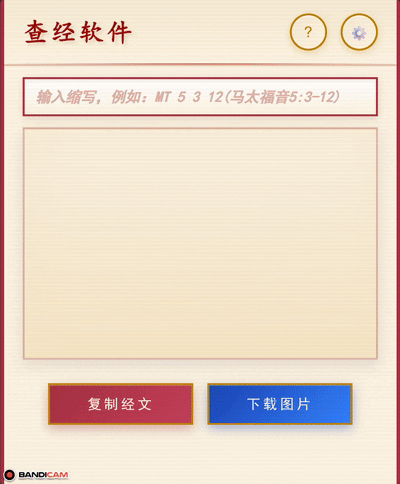

查经软件
?
⚙️
复制经文
下载图片
A
×
›
下一章
设置
×
显示设置
显示模式：
分节显示
整段显示
显示透字效果
个性内容上色
地名人名下划线标注
段落小标题
经文字号：
小 (14px)
中 (16px)
大 (18px)
特大 (20px)
超大 (24px)
复制文本设置
带有节号
每节经文一行
经卷名称缩写
经文章节标注位置：
单首行
在开头
在结尾
单尾行
经文标注括号样式：
【】
「」
（）
[]
()
保存设置
使用说明
×
输入方法
选择经卷
：输入经卷缩写（如MT），按空格选择
输入章节
：输入章号，按空格自动加冒号
单节经文
：输入节号，按回车查看
范围经文
：输入首节，按空格加横线，输入末节，按回车查看
整章经文
：输入章号后加z（如：MT 5z）
语音输入
：使用手机输入法语音输入，支持多种格式
语音输入示例
马太福音12章1到3节
→ 自动解析
马太福音12章1~3节
→ 自动解析
马太福音十二章一到三节
→ 自动解析
马太福音12章1节
→ 单节经文
键盘输入示例
MT 5 3
→ 马太福音5:3
MT 5 3 12
→ 马太福音5:3-12
MT 5z
→ 马太福音第5章全文
输入演示
快捷输入

整章输入
旧约经卷缩写
CSJ
创世纪
CAJ
出埃及记
LWJ
利未记
MSJ
民数记
SMJ
申命记
YS
约书亚书
SSJ
士师记
LDJ
路得记
SMS
撒母耳记上
SMX
撒母耳记下
LWS
列王纪上
LWX
列王纪下
LDS
历代志上
LDX
历代志下
YSL
以斯拉记
NXM
尼希米记
YST
以斯帖记
YBJ
约伯记
SP
诗篇
ZY
箴言
CDS
传道书
YG
雅歌
YSY
以赛亚书
YLM
耶利米书
YAG
耶利米哀歌
YXJ
以西结书
DYL
但以理书
HXA
何西阿书
YES
约珥书
AMS
阿摩司书
EBD
俄巴底亚书
YNS
约拿书
MJS
弥迦书
NHS
那鸿书
HBG
哈巴谷书
XFY
西番雅书
HGS
哈该书
SJL
撒迦利亚书
MLJ
玛拉基书
新约经卷缩写
MT
马太福音
MK
马可福音
LJ
路加福音
YH
约翰福音
ST
使徒行传
LM
罗马书
GLQ
哥林多前书
GLH
哥林多后书
JLT
加拉太书
YFS
以弗所书
FLB
腓立比书
GLX
歌罗西书
TSQ
帖撒罗尼迦前书
TSH
帖撒罗尼迦后书
TMQ
提摩太前书
TMH
提摩太后书
TDS
提多书
FLM
腓利门书
XBL
希伯来书
YGS
雅各书
BDQ
彼得前书
BDH
彼得后书
YHY
约翰一书
YHE
约翰二书
YHS
约翰三书
YDS
犹大书
QSL
启示录